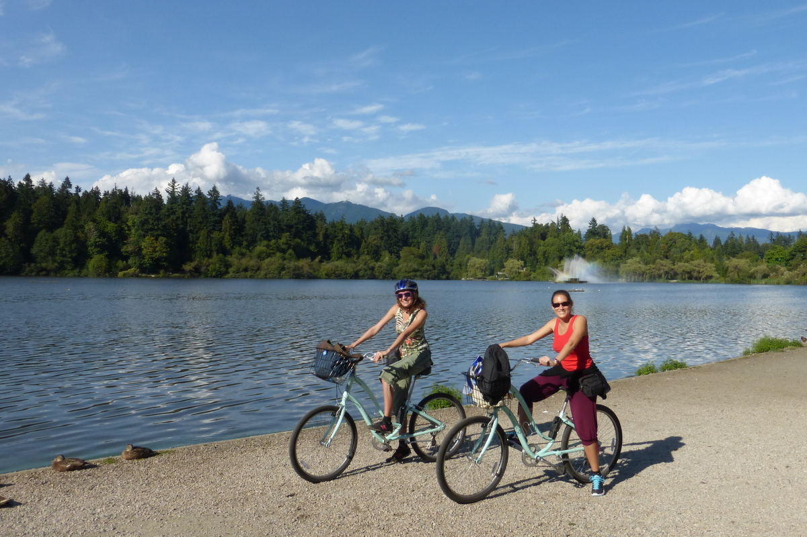
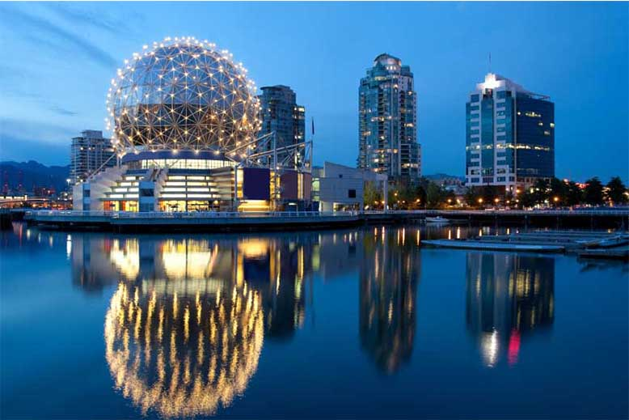
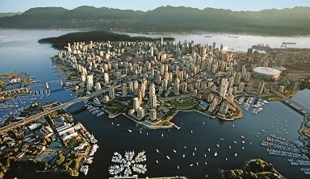
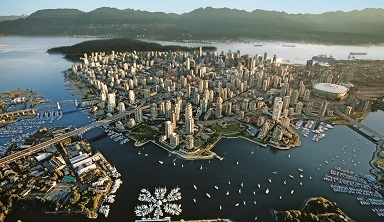

Vancouver
Bienvenue à Vancouver
Quartiers sympas, bars et restaurants chaleureux, vues exceptionnelles : voici quelques-unes des (bonnes) raisons qui expliquent l’engouement des visiteurs pour la ville.
Ne faites pas l’erreur de croire que Vancouver se limite au centre-ville (downtown). Marchez un peu ou prenez les transports publics et en quelques minutes vous vous mêlerez à la population locale dans l’un des quartiers les plus caractéristiques de la ville. Que vous visitiez les cafés de Commercial Dr, les repaires hipsters de Main St, les bars et restaurants indépendants de Gastown ou les demeures historiques du front de mer de Kitsilano, vous découvrirez que la ville se prête parfaitement à être explorée à pied. Et ne fuyez pas les habitants : ils paraissent réservés ou distants au premier abord, mais adorent parler de leur ville.
Les montagnes enneigées qui pointent entre les tours de verre ne se trouvent qu’à une trentaine de minutes en voiture. S’ils le désirent, les Vancouvérois peuvent aller skier le matin et rejoindre la plage dans l’après-midi (mais tout le monde préfère prendre son temps).
Devançant ses rivales, Montréal et Toronto, Vancouver est la capitale culinaire du Canada. Des restaurants chinois bruyants aux izakayas (pubs de quartier japonais) authentiques qui servent un immense choix de poissons et fruits de mer frais, notamment des crevettes et du saumon sauvage, la cuisine asiatique est très présente et particulièrement succulente, et elle reste inégalée en Amérique du Nord.
La bouillonnante scène artistique locale est très axée sur les évènements à petite échelle : c’est une sorte de mouvement locavore culturel. Le programme des manifestations culturelles est riche, avec des pièces de Shakespeare jouées au bord de l’eau, des spectacles de danse envoûtants, des représentations théâtrales éblouissantes, des concerts entraînants et de nombreuses œuvres d’art publiques –sans parler des trois journées portes ouvertes des ateliers d’artistes qui animent East Vancouver au mois de novembre.
Les lieux à visiter
-
Granville Island Public Market
Granville Island regorge de studios et de petits coins d’artistes cachés dans les rues secondaires du quartier, mais c’est surtout le marché et son ambiance effervescente qui attirent les voyageurs. Des pyramides de fruits à la peau luisante aux comptoirs appétissants des traiteurs, ce marché s’adresse aussi bien aux habitués des lieux qu’aux promeneurs occasionnels. Ajoutez à cela un banc au soleil sur la place qui borde le littoral, la musique des artistes de rue et le cri des mouettes, et vous aurez la recette d’un merveilleux après-midi en plein air.
-
Gastown
Ce quartier historique aux rues pavées est l’endroit où Vancouver a véritablement vu le jour. Apparu au XIXe siècle, il a récemment vu l’ouverture de nouveaux bars, restaurants et petites boutiques branchées, aménagés dans certains des édifices historiques les plus anciens de la ville. L’ancienne “old town” laissée à l’abandon est aujourd’hui un quartier pittoresque et prisé qui mêle ancien et moderne. C’est là que ce trouve la statue en bronze de “Gassy” Jack Deighton, dans Maple Tree Sq, qui garde le site où il fit construire le premier saloon en 1867.
-
Cuisine asiatique
Envie de saveurs orientales ? Vancouver possède sans doute la cuisine asiatique la plus authentique en dehors de l’Asie elle-même. Des restaurants de dim-sum aux confortables izakayas (pubs japonais) en passant par les adresses spécialisées dans le pho (soupe vietnamienne) ou les sushis, Vancouver offre un vrai voyage pour les papilles. Les voyageurs les plus curieux n’hésiteront pas à aller découvrir les marchés de nuit estivaux, qui ne sont pas sans rappeler ceux de Hong Kong : vous en trouverez un à Chinatown et deux à Richmond, qui abrite également une pléthore de restaurants asiatiques.
-
Grouse Mountain
Terrain de jeux préféré des Vancouvérois, Grouse Mountain n’est qu’à une courte distance en voiture du centre-ville. Toutefois, cette montagne ne s’adresse pas qu’aux fans de poudreuse : en été, on peut y admirer une vue superbe sur la ville, avec la mer qui scintille en contrebas, et en profiter pour effectuer une randonnée au milieu des fleurs sauvages. Rejoignez le sommet en prenant le téléphérique ou, pour les plus sportifs, en empruntant le Grouse Grind, très raide. Une fois en haut, ne manquez pas l’enclos des grizzlys : c’est un excellent moyen de voir des animaux sauvages de près.
-
Promenade sur le Seawall
Peu de villes mettent aussi bien leur front de mer en valeur que Vancouver : bordée d’arbres et léchée par les vagues, la promenade s’étend de Canada Place à Kitsilano et l’Université de Colombie-Britannique. Le point d’orgue de la promenade est la portion de 8,8 km qui longe Stanley Park. Avec, d’un côté, le spectacle apaisant des vagues et des montagnes et, de l’autre, le bruissement de la forêt et les cyclistes souriants, la sérénité est totale.
-
Vancouver Aquarium
Peu de sites allient aussi bien amusement et pédagogie que ce lieu emblématique et très prisé de Stanley Park. La plupart des parents y emmènent leurs enfants dans le seul but de les occuper quelques heures, mais ils en ressortent généralement aussi enchantés que leurs petits. Ne manquez pas le spectacle fascinant des méduses et les séances attendrissantes de nourrissage des dauphins et des loutres (véritables clowns du monde animal aquatique). Si le spectacle vous a plu, vous pourrez participer à l’intéressante visite en coulisse proposée par les dresseurs.
-
Bière artisanale
Ces dernières années, la Colombie-Britannique est sans conteste devenue LA grande région de la bière artisanale au Canada, avec l’ouverture de dizaines de microbrasseries. Pour notre plus grand plaisir, Vancouver n’est pas en reste et vous trouverez en ville de nombreux bars et restaurants qui proposent les meilleures bières locales. Vous pourrez ainsi découvrir notamment les arômes très houblonnés des IPA (Indian Pale Ale) de brasseries comme Driftwood ou Central City, voire essayer les nouvelles microbrasseries et nanobrasseries qui ne cessent d’ouvrir en ville.
-
Chinatown
Tous les anciens quartiers chinois ne se valent pas. Le plus grand Chinatown du Canada (et le troisième en Amérique du Nord), celui de Vancouver présente encore l’atmosphère animée d’une communauté chinoise dynamique, de ses boutiques d’apothicaires très fréquentées aux boucheries enveloppées dans la vapeur. Le quartier ne manque pas non plus de centres d’intérêt : jardins ornementaux, porte d’entrée monumentale, marché nocturne estival, sites historiques dans les rues secondaires… De quoi s’offrir un après-midi entier de visites.
-
Vancouver Art Gallery
Exposant depuis de nombreuses années les travaux des photographes photoconceptualistes locaux, les peintures d’Emily Carr et de nombreuses expositions temporaires en tous genres, le principal musée de la ville est devenu le plus important espace artistique de l’ouest du Canada. Et si des débats ont lieu pour transférer le musée vers de nouveaux locaux situés à proximité, certaines choses ne changeront pas, comme les soirées FUSE régulières, durant lesquelles le musée se transforme en lieu de sortie branché pour amateurs de culture.
-
Pont suspend ce Capilano
En arrivant assez tôt pour éviter les foules estivales, vous pourrez profiter sans problème de ce pont qui se balance doucement au-dessus du Capilano Canyon. Même les plus courageux auront les jambes qui flageolent, mais l’expérience reste amusante. C’est du moins ce qu’il vaut mieux que vous vous disiez, car il vous faudra bien revenir à un moment ou l’autre… Le parc abrite de nombreuses autres attractions, dont un réseau de ponts suspendus entre les arbres, une promenade en verre en bord de falaise et des sentiers nature passant entre de hauts arbres.
Découvrez la beauté de Vancouver
 
 
